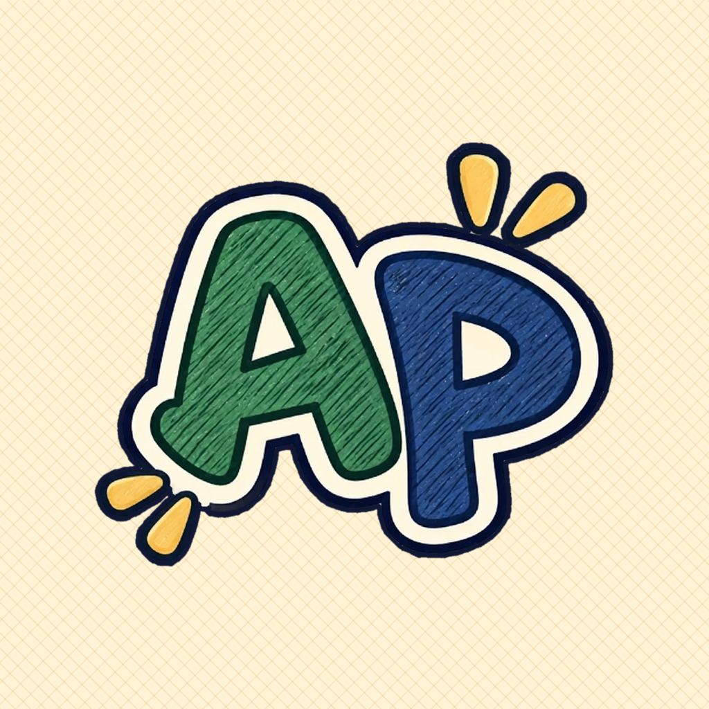

Icône AnimPartner
Icône adaptive Android dans les masques courants, monochrome à thème, iOS et favicon.
Android — masques
Cercle
Squircle
Goutte
Carré arrondi
48 px
Zone sûre (cercle de 66 dp sur 108 dp, en pointillés)
Premier plan sur fond
Icône à thème (Android 13+)
iOS, favicon, fond sombre

iOS (arrondi par le système)
Favicon 48 px
16 px